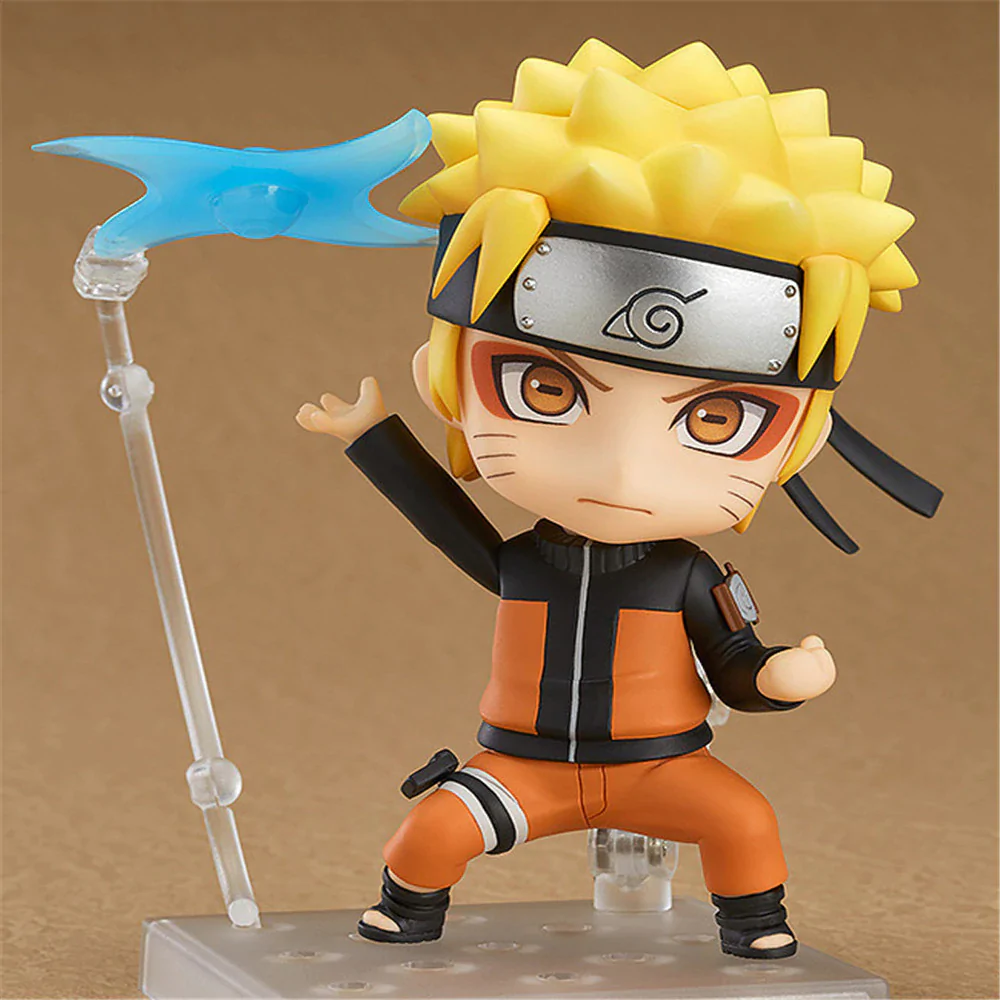
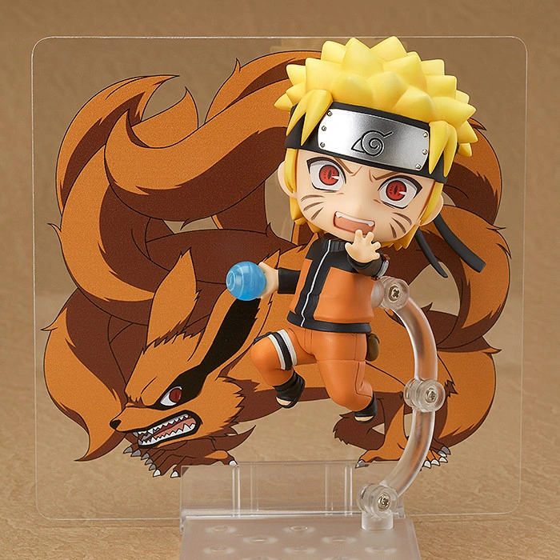

Naruto Uzumaki (うずまきナルト, Uzumaki Naruto) is a shinobi of Konohagakure's Uzumaki clan. He became the jinchūriki of the Nine-Tails
on the day of his birth — a fate that caused him to be shunned by most of Konoha throughout his childhood. After joining Team Kakashi, Naruto worked hard
to gain the village's acknowledgement all the while chasing his dream to become Hokage. In the following years, through many hardships and ordeals,
he became a capable ninja, regarded as a hero both by the villagers, and soon after, the rest of the world, becoming known as the Hero of the Hidden Leaf
(木ノ葉隠れの英雄, Konohagakure no Eiyū, literally meaning: Hero of the Hidden Tree Leaves). He soon proved to be one of the main factors in winning the
Fourth Shinobi World War, leading him to achieve his dream and become the village's Seventh Hokage (七代目火影, Nanadaime Hokage, literally meaning:
Seventh Fire Shadow).


From the popular anime series "Naruto Shippuden" comes a rerelease of the Nendoroid of the main character,
Naruto Uzumaki! Nendoroid designs are known to make the characters look younger than normal, but the confident expression of the grown-up
Naruto has been faithfully captured in cute Nendoroid size!
Effect parts for both the Rasengan and Rasenshuriken are included to pose Naruto making use of two of his most memorable ninjutsu techniques,
and both parts make use of a translucent material which make for a cute yet impressive appearance! Naruto can be posed holding the rasenshuriken
as well as throwing it by making use of the special stand which allows it to be displayed floating high up in the air!
The hand seals used for his techniques have been adorably shrunk down into Nendoroid size, and the wrist parts are interchangeable which means
you can make use of other hand parts to recreate different hand seals! In addition, a special illustrated sheet of the tailed beast 'Kurama' is
included to display Naruto interacting with the powerful Nine-Tails!
